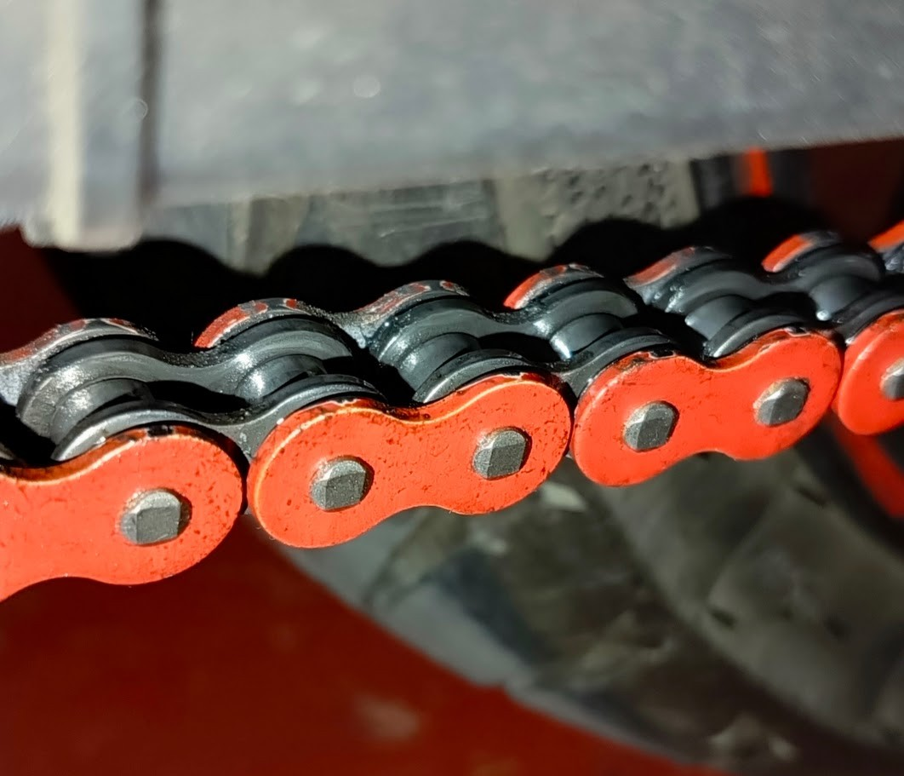

Jestem motocyklistą i szukając idealnego rozwiązania do smarowania łańcucha, chciałem stworzyć produkt — na początku dla siebie — pozbawiony wad, które widziałem zarówno w olejarkach krajowych, jak i zagranicznych.
Setki złotych za zbiorniczek z elektrozaworkiem i czasówką to w gruncie rzeczy dalej zwykła, grawitacyjna kapaczka. Brudząca i nie pozwalająca się porządnie ustawić — z wielu przyczyn, choćby zmieniających się warunków pracy łańcucha czy samego oleju, który się w niej używa. Testowałem też lepkie spraye do łańcucha, które owszem, smarują, ale zostawiają na łańcuchu, felgach i osłonie warstwę, którą trzeba potem szorować i myć.
Projekt ewoluował. Zależało mi, żeby był maksymalnie uniwersalny — żeby pasował zarówno do zabytkowego klasyka, jak i do crossa, enduro czy nowoczesnego sprzętu. Postawiłem sobie też twardy warunek: urządzenie ma nie ingerować w oryginalną instalację motocykla. Zwykłe podłączenie pod dedykowane złącze osprzętu, przez bezpiecznik — i tyle.
Wystarczy po dłuższej podróży odstawić motocykl na noc, a jeśli następnego dnia zauważę, że coś skapnęło na podłogę z łańcucha albo osłony — otwieram ustawienia, klikam „za mokro" i voilà. Olejarka sama koryguje dawkę.
Software od tamtej pory sporo ewoluował i rozrósł się o wiele funkcji, których na starcie nawet nie planowałem. Ale to, co niezmiennie robi najlepszą robotę, to sam hardware — pompka, która bez zarzutu smaruje mój własny łańcuch od kilku tysięcy kilometrów. Łańcuch jest niemal czysty, lekko naoliwiony dokładnie tam, gdzie powinien być: na rolkach i od wewnętrznej strony. Cała obsługa, jaką mu daję, to przetarcie suchą szmatką raz na tysiąc kilometrów — bez mycia, bez szorowania, bez walki z lepkimi resztkami sprayu, które sam miałem okazję przetestować na własnej skórze.
